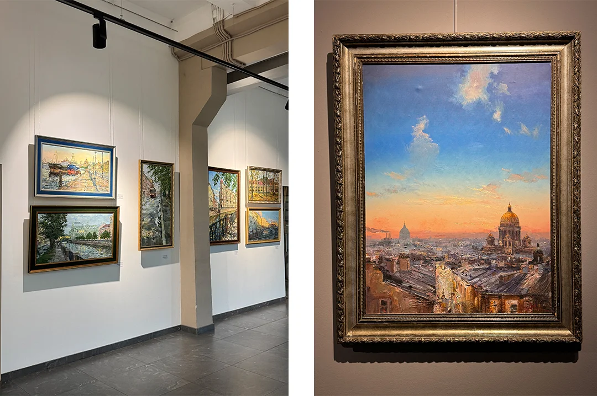
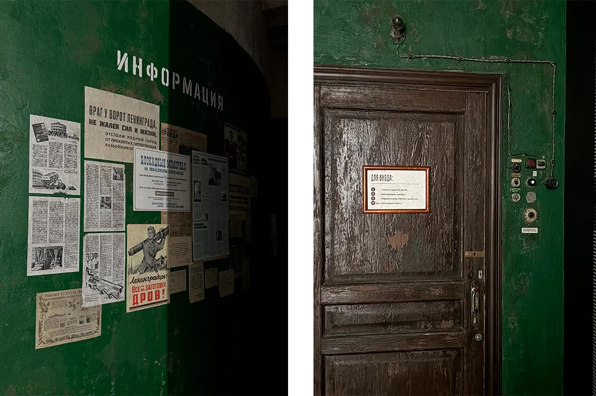
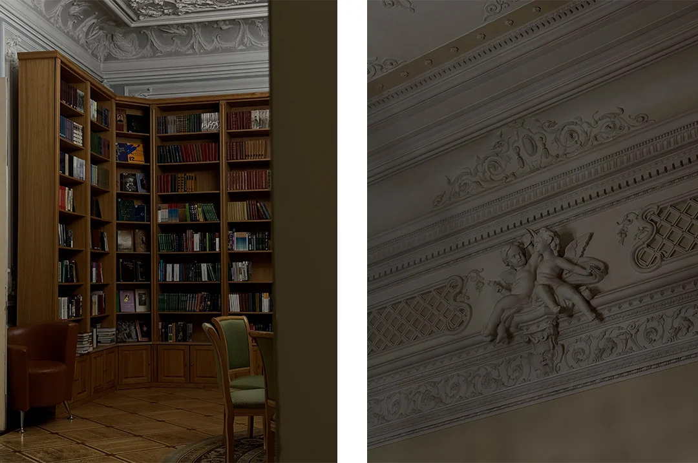
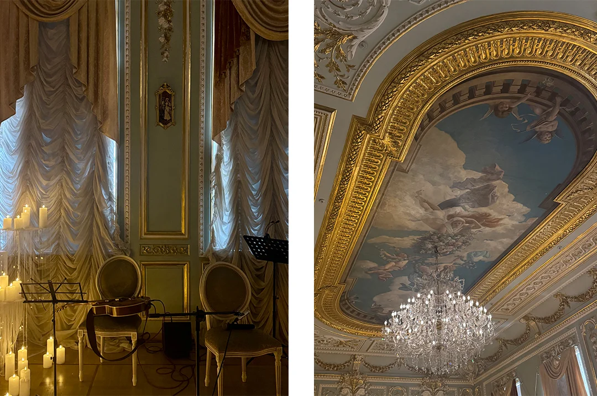
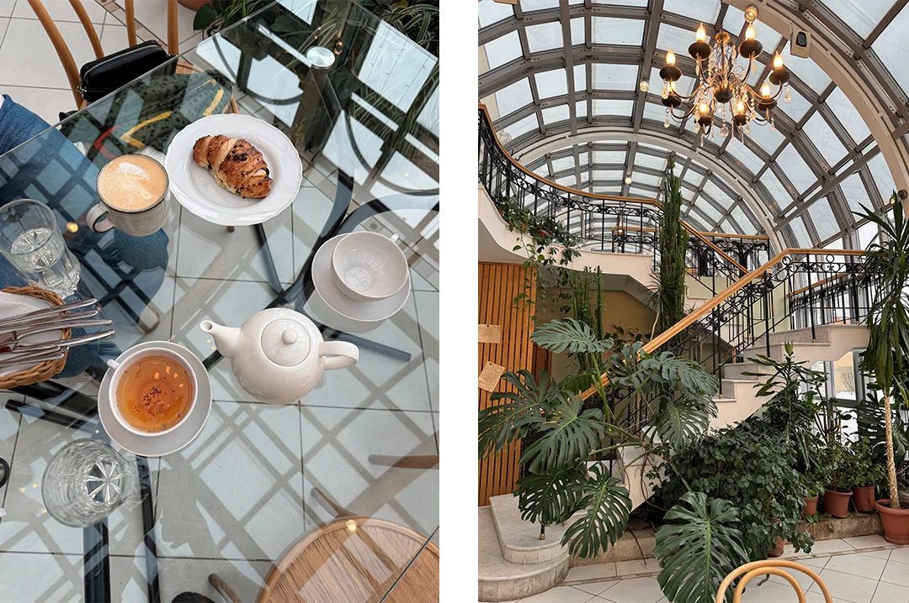

Петербург на выходные: 10 небанальных локаций от местной
Автор: Диана Акчурина
Небанальные места для короткой поездки: небольшие культурные пространства, необычные интерьеры, тихие дворы и городские точки, которые дополняют классический туристический маршрут.
Читать полную статью на блоге Островка →



Фото: Диана АкчуринаИсточник изображения


Фото: Диана АкчуринаИсточник изображения


Фото: Диана АкчуринаИсточник изображения


Фото: Диана АкчуринаИсточник изображения


Фото: Диана АкчуринаИсточник изображения